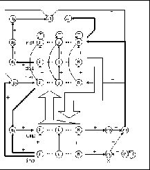

The topology of ART1 networks in SNNS has been chosen to to perform most of the ART1 algorithm within the network itself. This means that the mathematics is realized in the activation and output functions of the units. The idea was to keep the propagation and training algorithm as simple as possible and to avoid procedural control components.
In figure  the units and links
of ART1 networks in SNNS are displayed.
the units and links
of ART1 networks in SNNS are displayed.
The F or input layer (labeled inp in figure
or input layer (labeled inp in figure  )
is a set of N input units. Each of them
has a corresponding unit in the F
)
is a set of N input units. Each of them
has a corresponding unit in the F or comparison layer
(labeled cmp). The M elements in the F
or comparison layer
(labeled cmp). The M elements in the F layer are split into
three levels. So each F
layer are split into
three levels. So each F element consists of three units. One
recognition ( rec) unit, one delay ( del) unit and
one local reset ( rst) unit.
These three parts are necessary for different reasons. The recognition
units are known from the theory. The delay units are needed
to synchronize the network correctly
element consists of three units. One
recognition ( rec) unit, one delay ( del) unit and
one local reset ( rst) unit.
These three parts are necessary for different reasons. The recognition
units are known from the theory. The delay units are needed
to synchronize the network correctly .
Besides, the activated unit in the delay layer shows the winner of
F
.
Besides, the activated unit in the delay layer shows the winner of
F .
The job of the local reset units
is to block the actual winner of the recognition layer in case of a reset.
.
The job of the local reset units
is to block the actual winner of the recognition layer in case of a reset.
Finally, there are several special units. The cl unit gets
positive activation when the input pattern has been successfully
classified. The nc unit indicates an unclassifiable pattern,
when active. The gain units g and g
and g with their known functions and
at last the units ri (reset input), rc (reset comparison),
rg (reset general) and
with their known functions and
at last the units ri (reset input), rc (reset comparison),
rg (reset general) and  (vigilance), which
realize the reset function.
(vigilance), which
realize the reset function.
For an exact definition of the required topology for ART1 networks in
SNNS see section